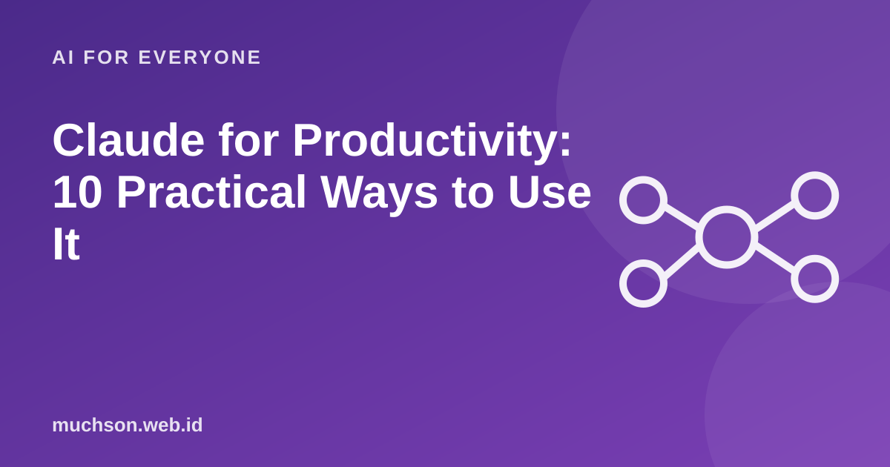

Home › Articles › AI for Everyone
AI for EveryoneClaude for Productivity: 10 Practical Ways to Use It
An AI assistant is most useful when it is used on the right tasks. Here are ten uses of Claude that often save time, with sample requests you can imitate. The principles apply to other AI assistants too.

The principles that decide the result
Claude is made by Anthropic and designed for conversation, writing, analysis and coding. Like other AI assistants, the quality of its answers is strongly affected by how clear your request is: goal, reader, format and examples. And like all language models, it can be wrong, so important results still need your checking. Product features and usage limits change over time, so check the latest information on the official site.
Text description of the diagram
- Give a goal and context: who, what for, what kind
- Ask for a draft: a quick first version
- Give feedback: shorter, more formal
- Check and finalise: you are responsible
Ten ways to use it
| # | Task | Example request |
|---|---|---|
| 1 | Summarise a long document | Summarise the attached report into 7 points and the 3 main risks for a busy reader. |
| 2 | Write a draft email or message | Write an email declining an offer politely and leaving the door open for future cooperation. |
| 3 | Explain a hard concept | Explain compound interest as if to a high school student, with one numerical example. |
| 4 | Brainstorm | Give 15 title ideas for a presentation on data security for non-technical employees. |
| 5 | Tidy writing | Fix the grammar and make it more concise without changing the meaning. Mark the parts you changed. |
| 6 | Analyse small data | From this table, what are the three main trends and what needs checking further? |
| 7 | Make a plan | Make a 4-week Python study plan for a beginner with 1 hour a day. |
| 8 | Create a template | Make a meeting-notes template with columns for decisions, owner and deadline. |
| 9 | Help with coding | Explain this error and give two ways to fix it with the reasons. |
| 10 | Practice and simulation | Act as a job interviewer, ask one question at a time, then give feedback on my answer. |
Build your request
What you must still check
Avoid entering personal data or company secrets into an AI assistant unless you understand that service's data policy and your organisation allows it.